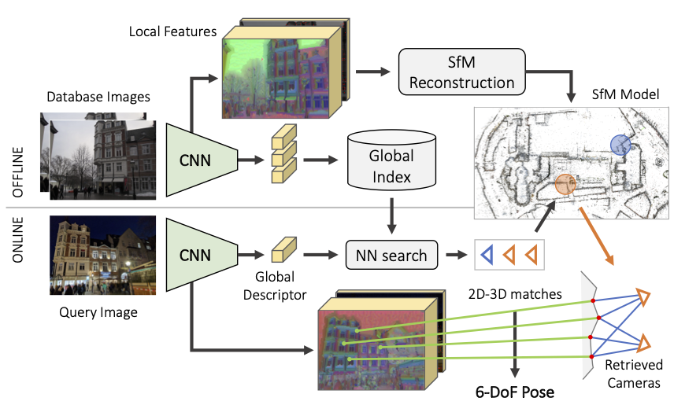
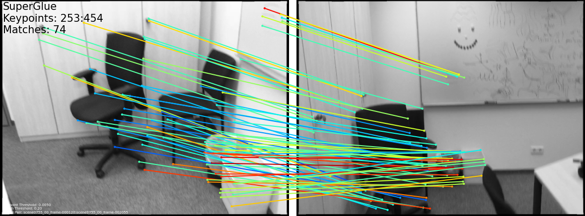
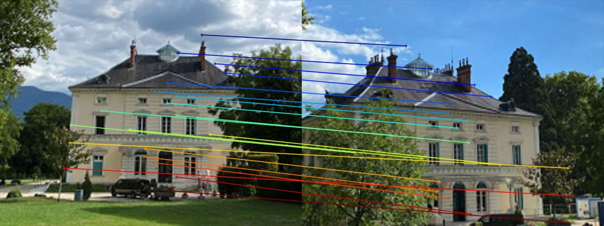
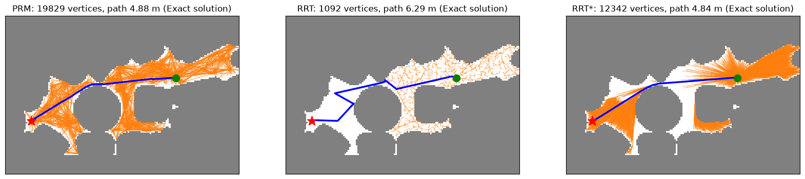
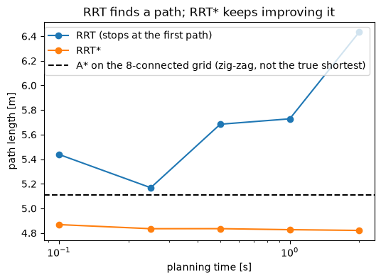
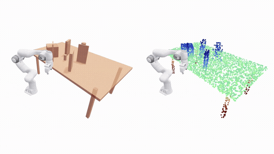
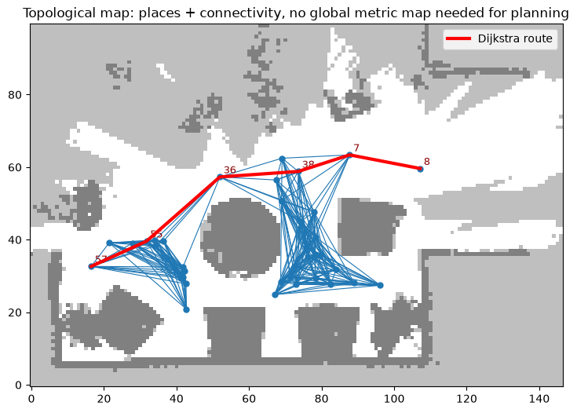
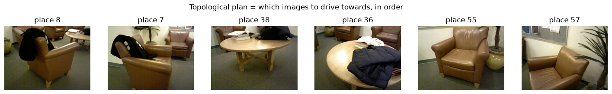

Where am I in the map? (PnP, P3P, hloc) · How do I get there? (A*, RRT*, OMPL, topological graphs)
Akash S Kumbar
Robotics Research Center, IIIT Hyderabad
Colab notebooks in notebooks/day2_*.py
The next 45 minutesPlan
notebook
idea
you will see
min
day2_01_p3p_pnp
pose from 2D–3D matches, P3P from scratch, RANSAC
4 poses that fit 3 points
15
day2_02_hloc_localization
retrieval → local matching → PnP
a night photo localised in a day map
15
day2_03_planning_ompl
C-space, A*, PRM / RRT / RRT*, topological graph
paths in Day 1's lounge map
15
Notebook 2 is faster on a GPU runtime (~1 min) but also runs on CPU (~5 min). Start its install cell early.
Two meanings of "where am I?"Localisation in a map
Metric (6-DoF) localisation
Map = 3D points (SfM / SLAM). Answer = camera pose \((R, \mathbf{t})\) in map coordinates. 2D–3D matches + PnP.
Topological localisation
Map = graph of places / images. Answer = which node am I at? Visual place recognition (image retrieval).

Fig. 1. Hierarchical localisation does both: retrieval first (coarse), then 2D–3D + PnP (fine). Figure: Sarlin et al., From Coarse to Fine, CVPR 2019 (github.com/cvg/Hierarchical-Localization).
Part 1 of 3PnP and the P3P solver
Outline
PnP and the P3P solver
Visual localisation with hloc
Navigation: planning in the map we built
In this part
Perspective-n-Point
Three rays, one triangle
Up to four poses fit three points
Many noisy points, many outliers
Notebook: notebooks/day2_01_p3p_pnp.py
ProblemPerspective-n-Point
Given \(n\) map points \(\mathbf{X}_j\), their pixels \(\mathbf{x}_j\), and \(K\), find \(R, \mathbf{t}\):
Unknown focal length (internet photo): start from an EXIF guess, then refine pose and focal by minimising reprojection error. Feeding the same 2D–3D pairs to cv2.solvePnPRansac gives the same pose (Δ rotation 0.07° for the day query, 1.3° for the night one).
Why learned featuresDay–night, viewpoint, scale

Fig. 6. SuperGlue on a wide-baseline indoor pair (Sarlin et al., CVPR 2020)

Fig. 7. MASt3R dense matching from 3D-aware features (Leroy et al., ECCV 2024)
Figures from github.com/magicleap/SuperGluePretrainedNetwork and github.com/naver/mast3r.
Part 3 of 3Navigation: planning in the map we built
Outline
PnP and the P3P solver
Visual localisation with hloc
Navigation: planning in the map we built
In this part
What "path planning" means
Dijkstra vs. A*
PRM · RRT · RRT* with OMPL
Roadmap vs. tree vs. optimal tree
Same API, a 7-DOF arm
Planning on a topological map
Notebook: notebooks/day2_03_planning_ompl.py
The map decides the plannerWhat "path planning" means
Fig. 9. RRT on the lounge C-space (stops at the first path)
Same start and goal, 1 s eachRoadmap vs. tree vs. optimal tree

RRT* is anytime: give it more time and the path keeps getting shorter. It even beats A* on the 8-connected grid, whose paths zig-zag along grid directions.

OMPL in the wildSame API, a 7-DOF arm

OMPL (Şucan, Moll & Kavraki, 2012) is the planning back-end of MoveIt, and is used in many navigation stacks.
Since v2.0: pip install ompl.
ss = og.SimpleSetup(space)
ss.setStateValidityChecker(is_valid)
ss.setStartAndGoalStates(start, goal)
ss.setPlanner(og.RRTstar(si))
ss.solve(1.0)
Animation from the OMPL gallery (github.com/ompl/ompl, doc/images/gallery).
No metric map neededPlanning on a topological map

Nodes = places where we have images (Day 1 keyframes). Edges = "reachable from here".
Plan = Dijkstra → a sequence of subgoal images. Execute it with a local controller that drives towards the next image: visual servoing / a learned image-goal policy (main lecture).

Takeaways
Metric localisation = 2D–3D matches + PnP-RANSAC. P3P is minimal and has up to 4 solutions.
hloc: retrieval (coarse) → learned local matching → PnP (fine). Works day-to-night.
Place recognition alone = localisation in a topological map.
Planning depends on the map: A* on grids, RRT*/PRM (OMPL) in continuous C-space, Dijkstra on place graphs.
Real stacks = global planner + local controller.
Read more
Haralick et al., Review of P3P solutions, IJCV 1994 · Kneip et al., CVPR 2011
Lepetit et al., EPnP, IJCV 2009
Sarlin et al., hloc, CVPR 2019 · DeTone et al., SuperPoint, 2018 · Lindenberger et al., LightGlue, ICCV 2023